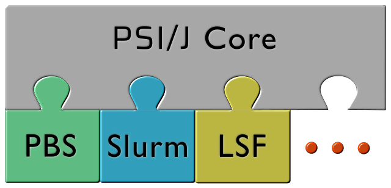

An abstraction layer over cluster schedulers

Write Scheduler Agnostic HPC Applications
Use a unified API to enable your HPC application to run virtually anywhere. PSI/J automatically translates abstract job specifications into concrete scripts and commands to send to the scheduler. PSI/J is tested on a wide variety of clusters.
PSI/J runs entirely in user space
There is no need to wait for infrequent deployment cycles. The HPC world tends to be rather dynamic and the ability to quickly integrate changes prompted by experimental changes in the cluster environment is essential.
Use built-in or community contributed plugins
Let's be realistic. It is virtually impossible for a single entity to provide stable and tested adapters to all clusters and schedulers. That is why PSI/J enables and encourages community contributions to scheduler adapters, testbeds, and specific cluster knowledge.
PSI/J has a rich HPC legacy
The design of PSI/J is based on a number of libraries used by state of the art HPC workflow applications that the PSI/J team has worked on. Its architectural foundations have been tested at extreme scales and in diverse environments.
 PSI/J is funded by the U.S. Department of Energy
PSI/J is funded by the U.S. Department of Energy
 PSI/J is part of the Exascale Computing Project
PSI/J is part of the Exascale Computing Project